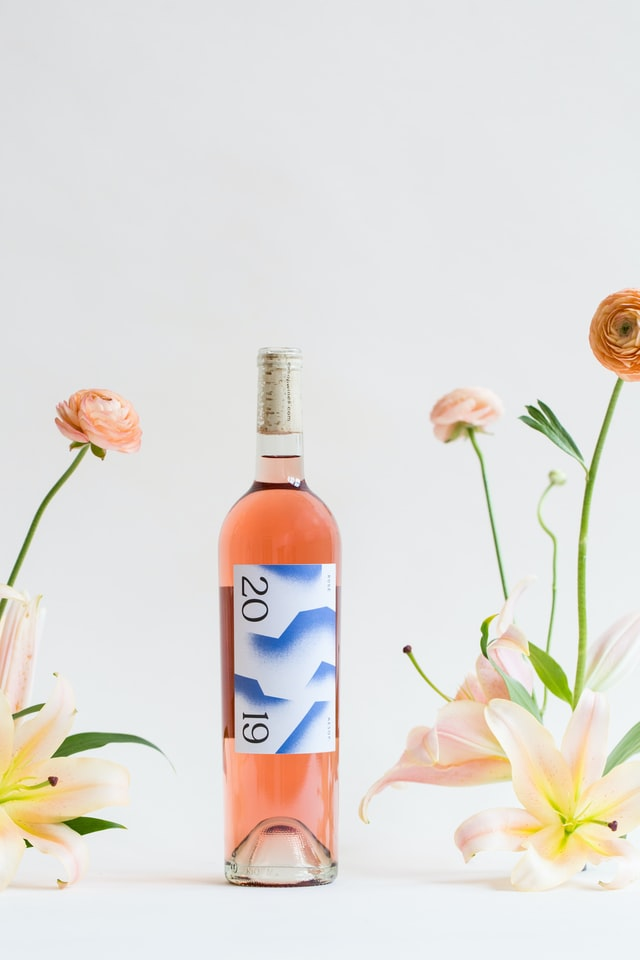
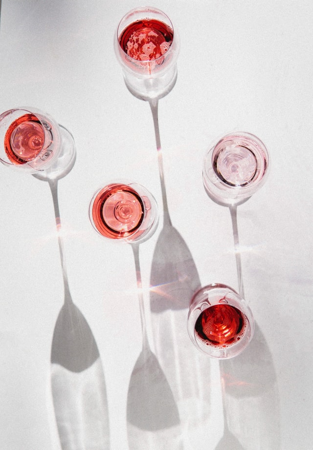
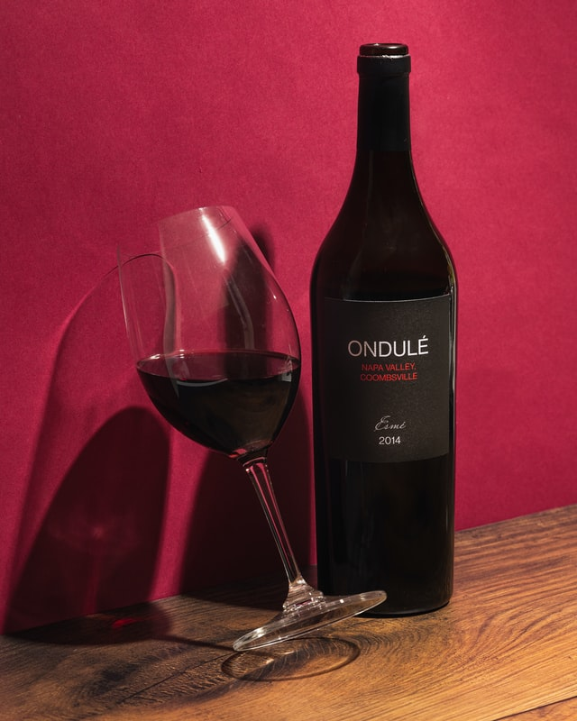
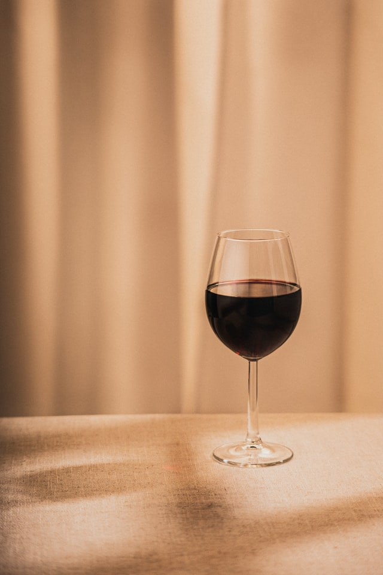
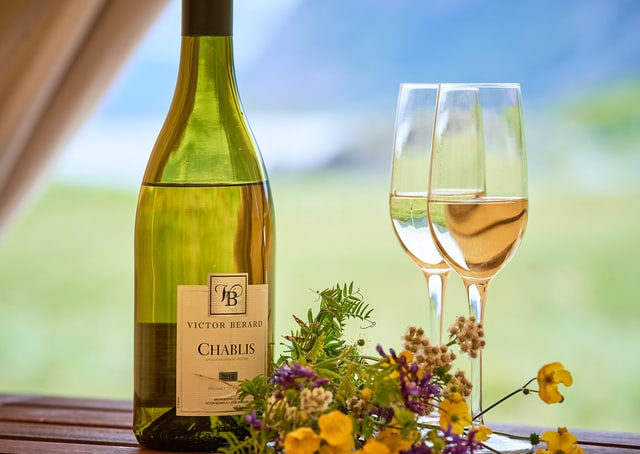
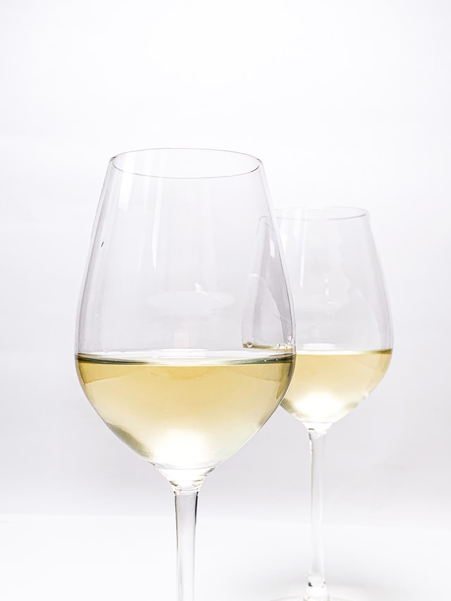
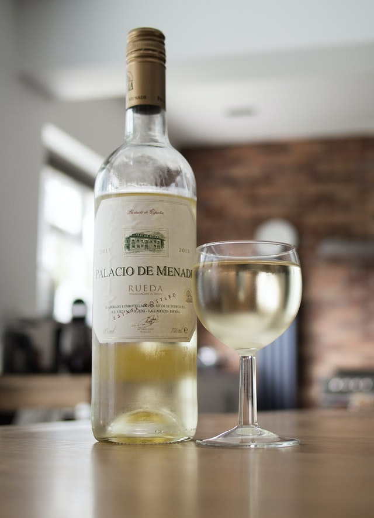

All the prestigious wines from our restaurant's cellar come directly imported from Nice wineries, where the Giancarlo family's own team carries out the entire bottling process, keeping the wines' natural freshness and pure aroma.


Rosé
-
New Harvest
- 2021 | Soupir Rose PREMIUM $ 216
- 2021 | DOUX BAISER DU CIEL $ 239
- 2020 | PORTE DE LA FERME $ 281
- 2019 | APRÈS-MIDI ENSOLEILLÉ $ 372
- 2020 | SOURIRE DE JOIE $ 403
-
Special Rosés
- 2017 | PLANCHER LA CARROSSERIE $ 1620
- 2015 | CONDUIRE DANS LES CHAMPS $ 2335
- 2014 | LES PORTES DU NOUVEL ESPOIR $ 7512
- 2013 | EN SÉCURITÉ AVEC LES ANGES $ 11690
2005 | Le Toucher De La Lune
With a light and bright pink look, it brings an aroma of ripe red fruits and floral notes.
- sweetness: 0/5
- acidity: 4/5
- tannin: 0/5
- fruity: 4/5
- Alcohol Content: 13,5%
- Ideal Temperature: 9°C
$ 45280
2003 | Courage Et Honneur
Fresh and slightly soft, it has a crystalline light pink color.
- sweetness: 2/5
- acidity: 3/5
- tannin: 0/5
- fruity: 3/5
- Alcohol Content: 12,0%
- Ideal Temperature: 9°C
$ 62331


Red
-
New Harvest
- 2021 | Après-midi cramoisi $ 232
- 2020 | GOUTTER NOIRE PREMIUM $ 253
- 2018 | AUBERGUE ROUGE $ 297
- 2019 | FRUITS ET ROSES $ 394
- 2018 | PLUIE D'AUTOMNE $ 516
-
Special Reds
- 2016 | BAIN EN CASCADE DE RUBIS $ 2250
- 2016 | PLUMES DU NOUVEAU MONDE $ 5641
- 2015 | LES PORTES DU NOUVEL ESPOIR $ 5980
- 2012 | L'ABEILLE DE RUBY $ 8722
2008 | Le Tir De Terrain
In ruby-red tones, it has a full-bodied flavor with a slightly sweet finish.
- sweetness: 3/5
- acidity: 3/5
- tannin: 3/5
- fruity: 4/5
- Alcohol Content: 13,0%
- Ideal Temperature: 17°C
$ 38650
2000 | Bon Porteur D'Esprit
Aroma of fresh red fruits such as strawberry and cherry, and soft and balanced fruity touches.
- sweetness: 0/5
- acidity: 3/5
- tannin: 2/5
- fruity: 4/5
- Alcohol Content: 12,0%
- Ideal Temperature: 16°C
$ 49998


White
-
New Harvest
- 2020 | AURA CLAIRE ET BONS VENTS $ 521
- 2021 | AGRUMES DANS LE CIEL BLANC $ 556
- 2019 | LE CHÂTEAU CÉLESTE $ 639
- 2018 | VERGER DU LION BLANC $ 815
- 2017 | LES BATEAUX D'HIVER $ 1056
-
Special Whites
- 2015 | L'ATTAQUE DE L'AUTEL $ 3674
- 2013 | COURIR DANS LES CHAMPS $ 4632
- 2011 | LA FEUILLE BLANCHE $ 6589
- 2011 | GOT VIVANT PREMIUM $ 9010
2005 | Tigre Sauvage
With an intense straw-yellow color, it has a light and refreshing flavor with herbal notes.
- sweetness: 0/5
- acidity: 3/5
- tannin: 0/5
- fruity: 4/5
- Alcohol Content: 15,0%
- Ideal Temperature: 11°C
$ 58964
1999 | Sous La Clair De Lune
In a bright yellow tone and with floral aromas, citrus and mineral notes.
- sweetness: 0/5
- acidity: 4/5
- tannin: 0/5
- fruity: 3/5
- Alcohol Content: 13,0%
- Ideal Temperature: 9°C
$ 71412


Harvest Chef Prasert
A special crop honoring our dear chef Prasert Jaa, for his excellent work for several years at the restaurant Giancarlo Cuisine Française.
With a pale pink hue and bright reflections, Chef Prasert brings an aroma of red fruits and floral notes, highlighting orchard and citrus with a fruity, versatile and fresh flavor.
- sweetness: 0/5
- acidity: 4/5
- tannin: 0/5
- fruity: 3/5
- Alcohol Content: 13,5%
- Ideal Temperature: 9°C
$ 9854